Catálogo de Herramientas
Pipeline
Industrias
Catálogo
DoceProjects — Herramientas
14 HERRAMIENTAS.
LISTAS PARA DEPLOYAR.
Probadas en producción. Adaptables a tu empresa en días, no meses.
14
Herramientas
15
Clientes
4
Categorías
—
En producción
Todas
×
El Problema
La Solución
Métricas de Ahorro
Ya Deployado En
Funciona Para
Agendar demo →